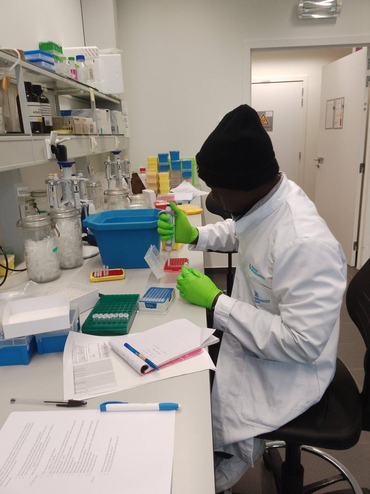
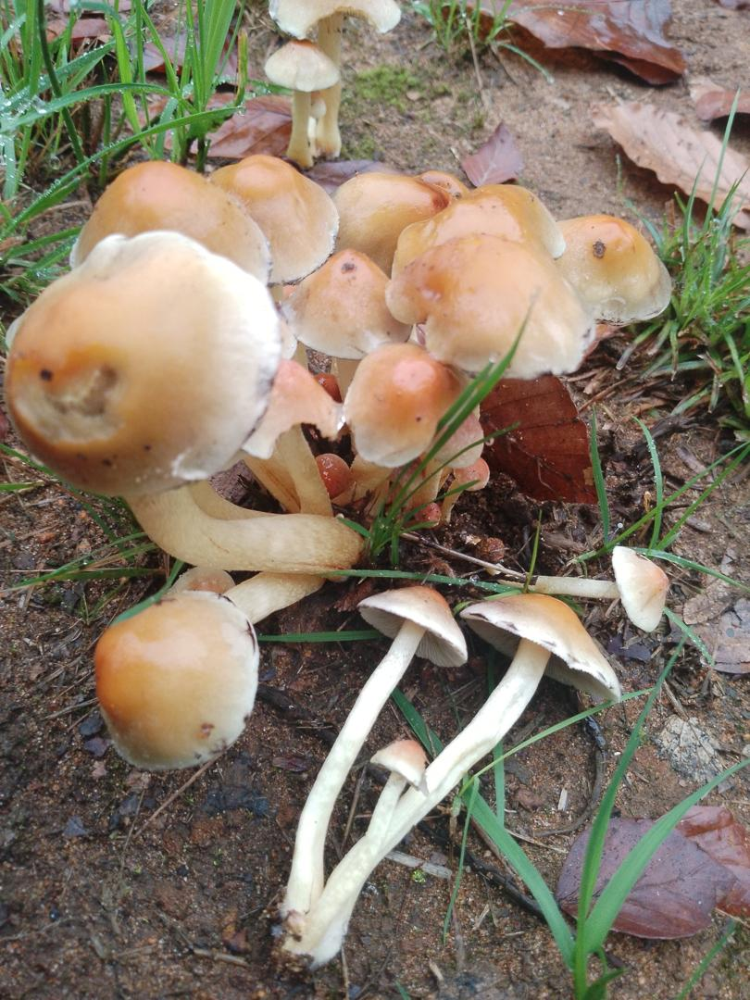
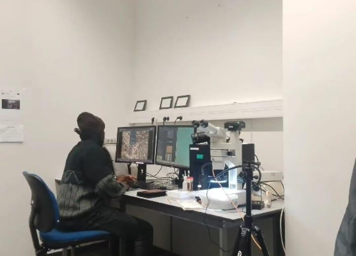

Mycorrhizal Diversity and Function in Tropical Agroecosystems of West Africa
Project Objective
To characterize the diversity, distribution, and ecological functions of ectomycorrhizal (ECM) and arbuscular mycorrhizal (AM) fungi in tropical agroecosystems across Benin (West Africa), using morphological, molecular (eDNA, DNA barcoding), and phylogenetic approaches. The ultimate goal is to develop sustainable inoculation strategies for forest restoration and to improve soil health in agricultural systems.
Soil Sampling and Mycorrhizal Spore Collection
Jan – Mar 2024Systematic soil sampling at 15 sites across three agroecosystems in northern Benin (cacao plantations, maize fields, and natural forest edges). Isolation and morphological identification of mycorrhizal spores using wet sieving and centrifugation techniques. Over 200 soil samples were collected and processed.


Morphological Characterization of ECM Fungi
Apr – Jun 2024Laboratory-based morphological characterization of ectomycorrhizal root tips collected from dominant tree species (Isoberlinia doka, Terminalia laxiflora). Analysis of branching patterns, mantle structures, and Hartig net organization. Microscopy imaging and voucher specimen preparation for the herbarium.


eDNA Extraction and Metabarcoding Analysis
Jul 2024Participation in the Mycoblitz Summer School (Ghent, Belgium) for hands-on training in environmental DNA extraction from soil samples, PCR amplification of ITS regions, and next-generation sequencing (NGS) metabarcoding. Bioinformatic processing of sequences using QIIME2, R/Phyloseq, and UNITE fungal database.


Mycorrhiza Culture & Inoculum Production Training (Senegal)
Mar – May 2026Advanced training at the National Laboratory for Plant Production Research (LNRPV), ISRA, Dakar (Senegal), on mycorrhizal culture optimization, fungal inoculum production at scale, and quality control methods. Development of a standardized inoculation protocol for local tree species used in reforestation programs.


